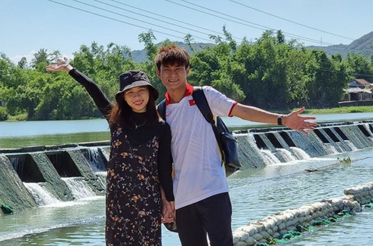
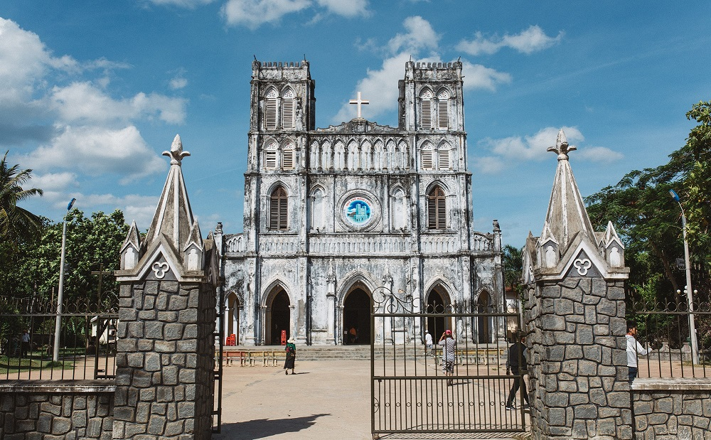
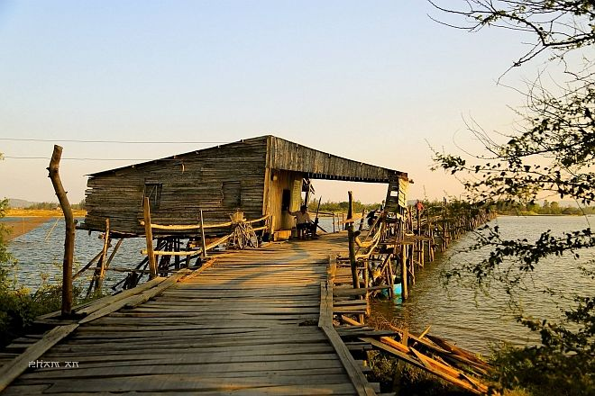
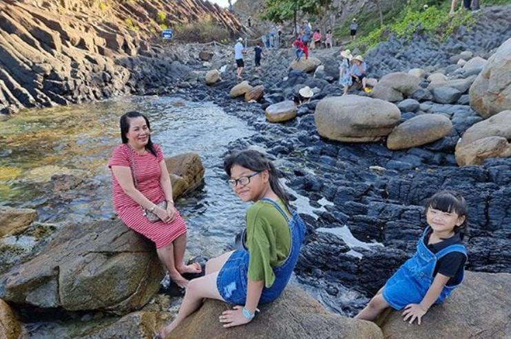

Giới Thiệu Chung
Phú Yên - vùng đất của "hoa vàng cỏ xanh" với những bãi biển trong xanh, ghềnh đá độc đáo và ẩm thực đậm đà. Lịch trình 3 ngày 2 đêm này, dựa trên kinh nghiệm thực tế, sẽ giúp bạn ăn ngon, chơi vui và khám phá trọn vẹn Phú Yên một cách tự túc và đầy hứng khởi.
Lịch Trình Chi Tiết
NGÀY 1: Khám Phá Phía Bắc Phú Yên
Bắt đầu hành trình khám phá Phú Yên sớm vào buổi sáng để tận hưởng không khí trong lành và ẩm thực địa phương, tập trung vào các điểm nổi tiếng ở phía Bắc tỉnh.
- Địa chỉ: Ngã ba Hàm Nghi - Lê Trung Kiên, P.2, Tuy Hòa.
- Giờ: 4:30 - 7:30
- Giá: 10k - 15k/tô
Thưởng thức cà phê sữa đá nhuyễn tại một quán cóc địa phương để cảm nhận nhịp sống buổi sáng.
- Địa chỉ: 156 Lê Trung Kiên, P.2, Tuy Hòa (Cô Hồng).
- Giờ: 5:00 - 17:00
- Giá: 10k - 15k/ly
Di chuyển lên phía Bắc để khám phá các địa danh nổi tiếng (thứ tự có thể linh hoạt):
- Đập Tam Giang: Cảnh quan yên bình. (Không phí) 
- Nhà thờ Mằng Lăng: Kiến trúc cổ, nơi lưu giữ sách Quốc ngữ đầu tiên. (Không phí) 
- Cầu gỗ Ông Cọp: Cây cầu gỗ dài nhất Việt Nam. (Phí qua cầu: 1k-3k) 
- Gành Đá Đĩa: Kỳ quan thiên nhiên độc đáo. (Vé: 20k/người) 
Thưởng thức đặc sản dê tại quán Phương Đông gần Bãi Xép, hoặc các quán hải sản tại Gành Đá Đĩa.
- Địa chỉ gợi ý: Dê Phương Đông, An Mỹ, Tuy An.
- Giá: Từ 120k.
Thư giãn, tắm biển và check-in tại phim trường "Tôi thấy hoa vàng trên cỏ xanh".
- Địa chỉ: An Mỹ, Tuy An.
- Vé: 20k/người. Tắm nước ngọt có phí.
Viếng thăm ngôi chùa nổi tiếng trên đường về lại thành phố.
- Địa chỉ: Mỹ Quang Nam, An Chấn, Tuy An. (Không phí)
Ngắm hoàng hôn tại biểu tượng mới của Tuy Hòa.
- Địa chỉ: Ngã tư Nguyễn Hữu Thọ - Độc Lập. (Không phí)
Thưởng thức các món đặc sản:
- Mắt cá ngừ đại dương (Quán Bà Tám).
- Bún thịt nướng bánh cuốn Hà (Ngã tư Ngô Quyền - Trần Hưng Đạo).
- Kem trộn Duy Tân (Kè Bạch Đằng).
NGÀY 2: Thiên Nhiên Hoang Sơ & Ẩm Thực
Dành ngày thứ hai để khám phá vẻ đẹp thiên nhiên hoang sơ hơn và tiếp tục hành trình ẩm thực.
- Địa chỉ: Cơm gà Phương, hẻm Trần Quý Cáp, Tuy Hòa.
- Giá: 20k - 50k.
Chuẩn bị đồ ăn, nước uống và trang phục phù hợp để trekking và tắm thác tại Vực Hòm. Đường đi có thể hơi khó khăn.
- Địa chỉ: Vĩnh Xuân, An Lĩnh, Tuy An. (Không phí)
Thưởng thức các món ăn vặt nổi tiếng:
- Bánh bèo chén, bánh canh bột lọc (dưới chân núi Nhạn).
- Ốc xào Hoa Héo (170 Lê Trung Kiên).
- Xỏ lòi (bờ biển Tuy Hòa).
- Bắp nướng mắm nêm hẹ rí (Vòng xoay Trần Phú - Hùng Vương).
- Địa chỉ: Lẩu gà lá é Phú Yên Thảo Nguyên, Bờ kè Bạch Đằng.
- Giá: 200k - 300k.
NGÀY 3: Đón Bình Minh & Khám Phá Phía Nam
Ngày cuối cùng dành để đón bình minh ở cực Đông và khám phá các điểm phía Nam trước khi kết thúc hành trình.
Xuất phát sớm để đón bình minh đầu tiên trên đất liền Việt Nam.
- Địa chỉ: Hòa Tâm, Đông Hòa.
- Vé: 20k/người.

Thưởng thức hải sản tươi sống trên các bè nổi tại Vịnh Vũng Rô.
- Địa chỉ gợi ý: Nhà bè Phương Anh.
Đi chợ Tuy Hòa hoặc các cửa hàng đặc sản để mua quà cho người thân.
Tham quan di tích Chăm Pa cổ kính và ngắm toàn cảnh thành phố Tuy Hòa.
- Vé: 15k/người.
Di chuyển ra sân bay hoặc bến xe, kết thúc chuyến đi Phú Yên 3 ngày 2 đêm đáng nhớ.
Mẹo Du Lịch Hữu Ích
- Thời điểm lý tưởng: Du lịch Phú Yên từ tháng 1 đến tháng 8, đặc biệt tháng 2-3 (thời tiết mát mẻ, ít mưa). Tránh tháng 9-12 vì có thể có bão.
- Di chuyển: Máy bay (đến sân bay Tuy Hòa), xe khách, hoặc tàu hỏa (ga Tuy Hòa). Thuê xe máy tại Tuy Hòa để tự do khám phá (khoảng 120k-150k/ngày).
- Lưu trú: Đa dạng lựa chọn từ khách sạn, resort đến homestay. Nên đặt phòng trước, đặc biệt vào mùa cao điểm.
- Ẩm thực không thể bỏ lỡ: Mắt cá ngừ đại dương, sò huyết Đầm Ô Loan, bánh canh hẹ, chả dông, gà nướng Sông Cầu, bò một nắng - kiến vàng...
- Mang theo: Kem chống nắng, mũ rộng vành, kính râm, trang phục thoải mái, đồ bơi, giày dép dễ đi (đặc biệt khi leo Gành Đá Đĩa, Mũi Điện).
- Ngân sách dự kiến: Khoảng 2.500.000 - 4.000.000 VNĐ/người cho chuyến đi 3 ngày 2 đêm (chưa bao gồm vé máy bay/tàu xe di chuyển đến Phú Yên), tùy thuộc vào lựa chọn lưu trú và ăn uống.
- An toàn: Cẩn thận khi tắm biển, leo trèo ở các ghềnh đá. Tuân thủ các quy định tại điểm tham quan.